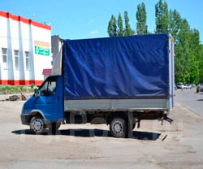
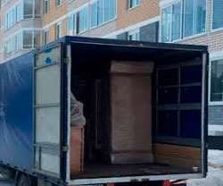
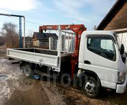

Грузоперевозки в Минске и по Беларуси
Осуществляем Грузоперевозки по РБ быстро и бережно. Цена на услугу зависит от колличества потраченого времени, пройденого расстояния, грузоподъемности и габаритов перевозимого имущества. Также следует учитывать стоимость работы подсобных рабочих, если такие требуются. Точную цену всегда можно узнать по телефонам указаным на сайте. Звоните, будем рады вам помочь!!!



| Вид работ | Тип работ | Цены | Примечание |
|---|---|---|---|
| Грузоперевозки (Наличный расчет) |
до 1 тонны (8 куб.) до 2 тонн (15 куб.) до 3 тонн (21 куб.) до 5 тонн (36 куб.) |
17 руб/час 18 руб/час 20 руб/час 35 руб/час |
Минимальный заказ 2 часа Минимальный заказ 4 часа |
| Грузоперевозки (Безналичный расчет) | - | 18-35 руб./час (уточняйте у оператора) |
Минимальный заказ 3 часа |
| Грузоперевозки по Беларуси (За пределы МКАД) | - | от 60 копеек/км | - |
| Грузчики | Наличный расчет | от 8 руб./час (за одного грузчика) | Минимальный заказ 2 часа |
| Грузчики | Безналичный расчет | от 10 руб./час (за одного грузчика) | Минимальный заказ 3 часа |